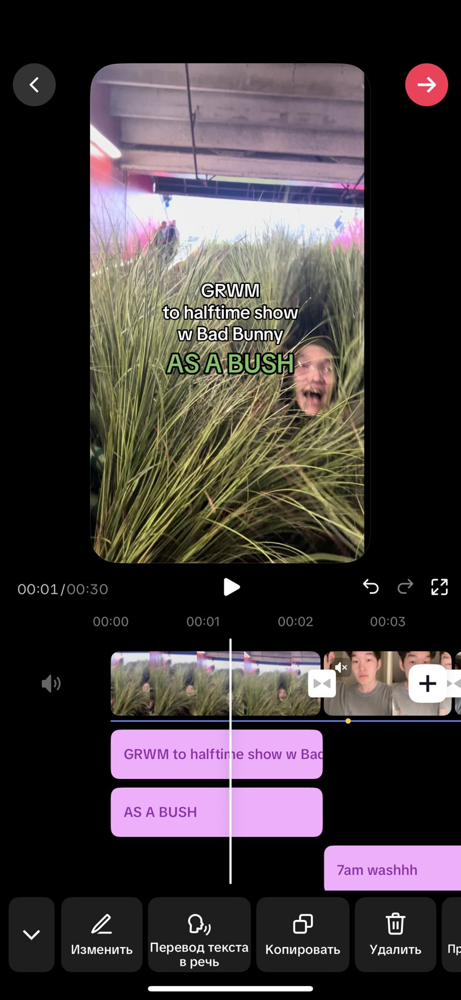
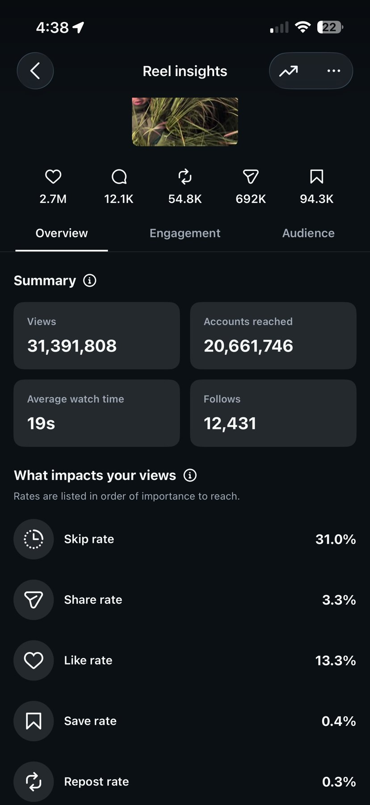
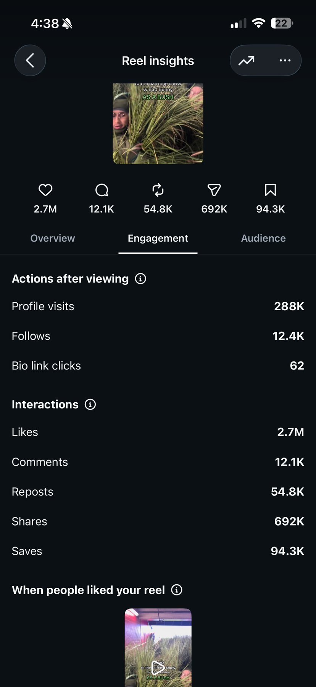
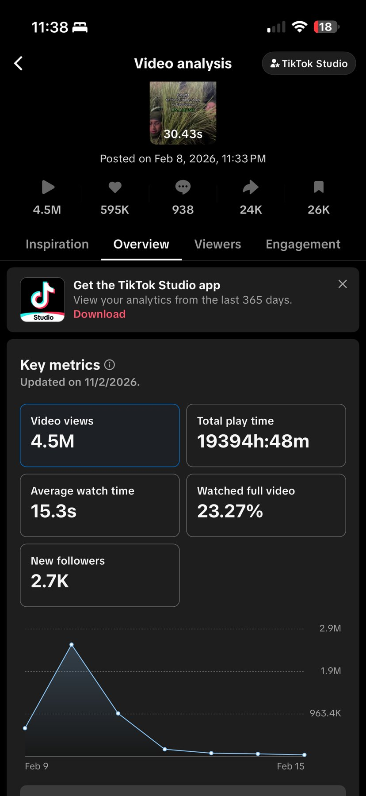
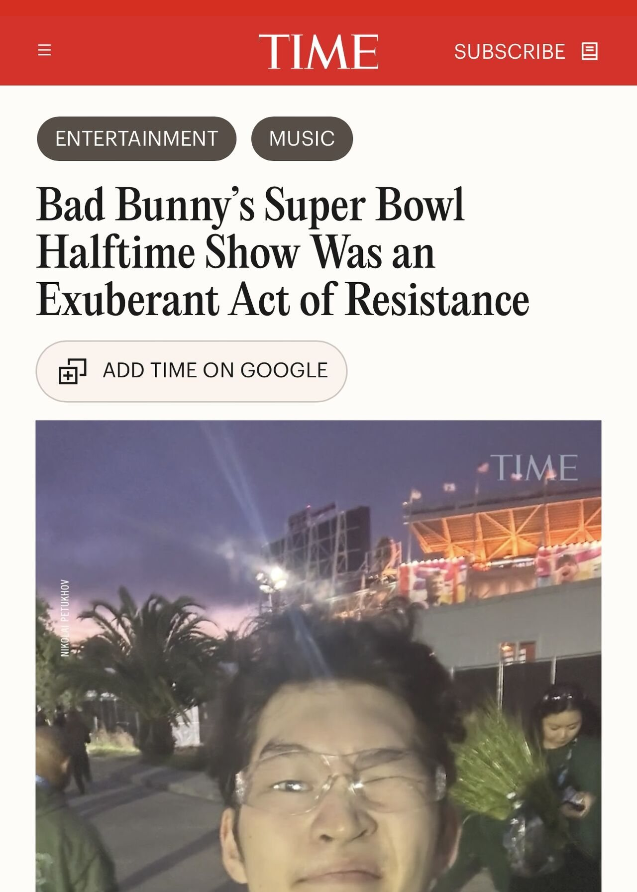
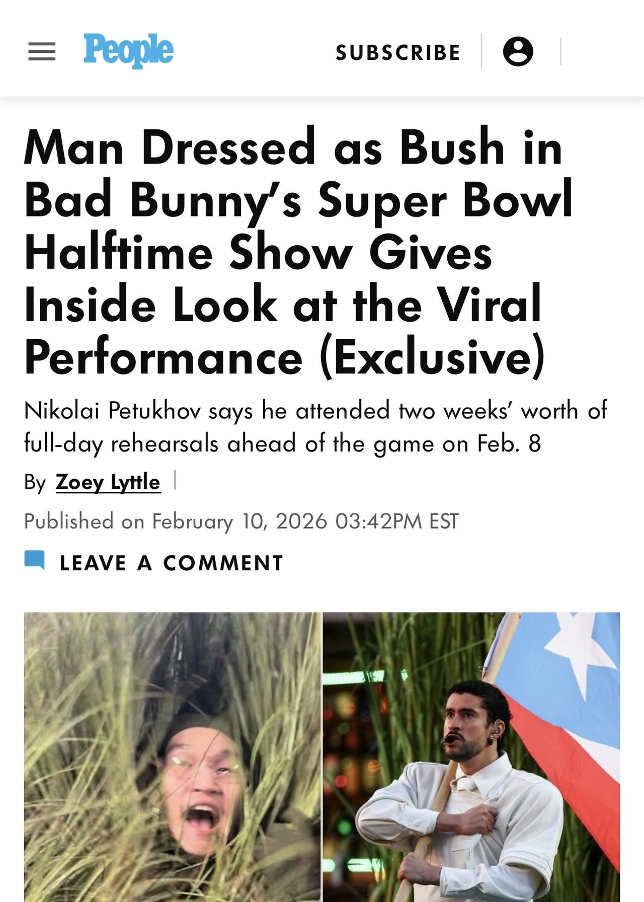

Content 2026
Super Bowl LX
Turning one night into 35.9M views and global press.
Overview
I performed as a bush in Bad Bunny’s halftime show. Then I posted the day.
I was one of the performers dressed as bushes in Bad Bunny’s Super Bowl LX halftime show. When I got home after the event, I lay on the floor for five minutes, trying to process what had just happened.
Then I opened CapCut and turned the footage I already had into a GRWM (“get ready with me”) video. It went up at 11:33 PM that same night.
The idea
A one-second hook, then the whole day.
0–1 s · the hook
1–30 s · the story
GRWM is a format people already know how to watch. The twist is in the caption: the person getting ready is about to become a bush on the biggest stage of the year. The text lands in the first second, before anyone can scroll away.

Results
35.9M views across Instagram and TikTok, with no paid push.
| Metric | TikTok | |
|---|---|---|
| Views | 31.4M | 4.5M |
| Likes | 2.7M | 595K |
| Shares | 692K | 24K |
| Saves | 94.3K | 26K |
| New followers | 12.4K | 2.7K |
| Avg. watch time (30 s video) | 19 s | 15.3 s |
Instagram also reached 20.7M accounts and drove 288K profile visits. On TikTok, 23% of viewers watched to the end.



Press
The video turned into a news story.
The show itself was watched by 128M viewers in the U.S. My reel was picked up by TIME, People and BBC Radio 1, and NBC Bay Area interviewed me as a halftime performer and UC Berkeley student. My audience grew to 11K+ followers, up 1,200%.


Takeaways